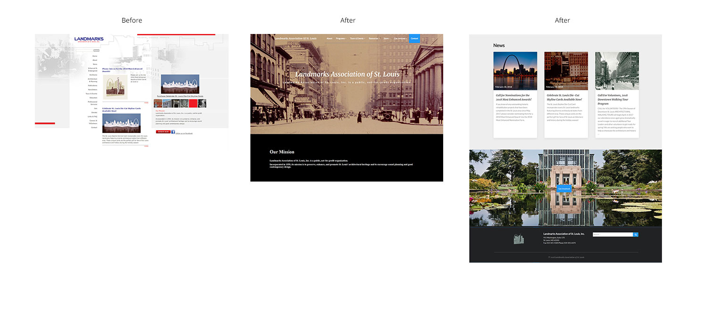
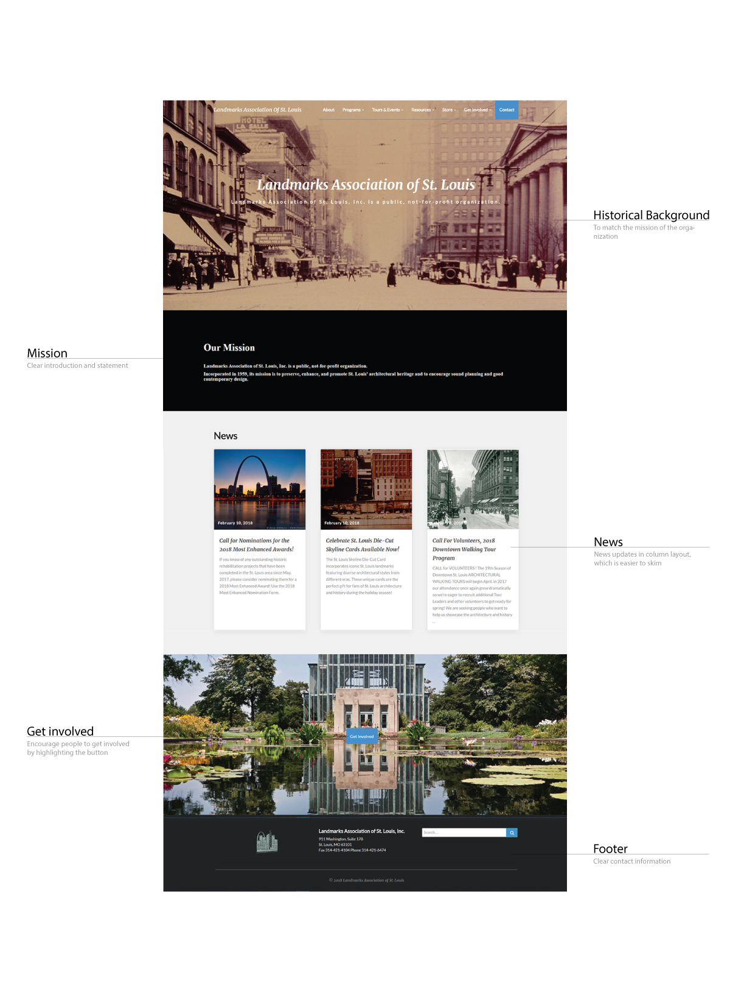

A Group Project | Tools: Wordpress, html, css
I redesign the homepage layout so that it is more user-friendly both to the staff members and visitors. By doing card sorting, we organize the content into a more clear and intuitive hierarchy.

Homepage
An important feature of the app is that by automatically creating a timeline, it acts as a personal notebook for travelers to keep track of the places they visited and the photos they took. From there, you can easily add notes and post your story.

Mapping
In the discover section, you can easily search and find the traveler, location, hashtag, and event you are interested in. It helps users to explore and connect with other users with similar interests.

Store
By following travelers you like, you can see the stories they share and the details of their trips. The interface is designed as a general to detail layout: from overall introduction with photo highlights to detailed daily itinerary and recommendations.

Traveling is a process of creating the memory.
Through interviewing travelers, brainstorming and designing the app, I realize people always have precious memories during their journey, either with their families, friends, or someone they just met. The app acts as a diary, as an album and as a storybook to store those beautiful moments. It also provides a platform for people to share them with others.
More to explore.
Traveling is about enjoying the process. For me, designing this app is also a great process for me. I learned how to develop a concept from the beginning, how to think in a user's perspective and how to use design to reach the goal. Both traveling and learning never ends, as:
"The journey not the arrival matters."